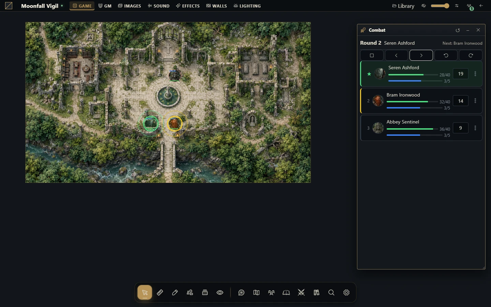

Encontros, iniciativa e turnos
Prepare um encontro da cena e avance turnos considerando o sistema da campanha.


Prepare um encontro
Combate está associado a uma cena. O host fornece o rastreador; o sistema de RPG escolhido pode fornecer configuração de iniciativa e regras próprias. Não presuma que todos os sistemas tenham a mesma fórmula, efeitos ou recursos.
Como mestre, abra a cena pretendida e o rastreador de combate.
Adicione tokens ou atores participantes. Tokens precisam pertencer àquela cena.
Configure entrada/fórmula de iniciativa suportada ou preencha valores manualmente.
Role a iniciativa para o escopo desejado quando houver fórmula e confira a ordem.
Ajuste indicadores de oculto ou derrotado e inicie o encontro.
Avance turnos e rodadas pelos controles. Encerre quando terminar.
Um encontro aceita até 64 combatentes. É necessário pelo menos um para iniciar; rolar iniciativa exige fórmula configurada.
Compartilhe a responsabilidade pelo turno
O mestre gerencia ordem, participantes e configuração. Um jogador pode avançar o turno atual somente quando o encontro está ativo e ele controla o combatente atual. Estar visível não significa que o combatente esteja sob controle daquela conta.
Combatentes derrotados são ignorados no avanço normal. Se todos estiverem derrotados, não há próximo combatente elegível. Adicionar ou reordenar participantes não substitui selecionar o turno atual pretendido.
Efeitos e turnos anteriores
Efeitos e condições podem avançar nos limites de turno/rodada conforme sistema e configuração. Voltar ao turno anterior muda o histórico do rastreador; não desfaz genericamente regras automatizadas ou alterações de recursos já confirmadas. Confira as fichas afetadas ao corrigir um avanço indevido.
Solucione problemas
Se não puder rolar iniciativa, confira fórmula e valores exigidos pela ficha. Se um jogador não consegue encerrar o turno, confira controle do token/ator e combatente atual. Se o combate parece ausente depois de trocar de mapa, abra o encontro da cena correta. Após conflito de revisão, reconecte e use o rastreador atual, sem forçar dados antigos da ordem.